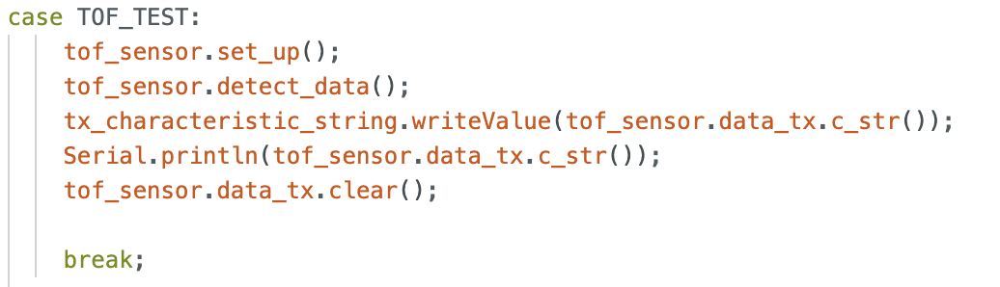
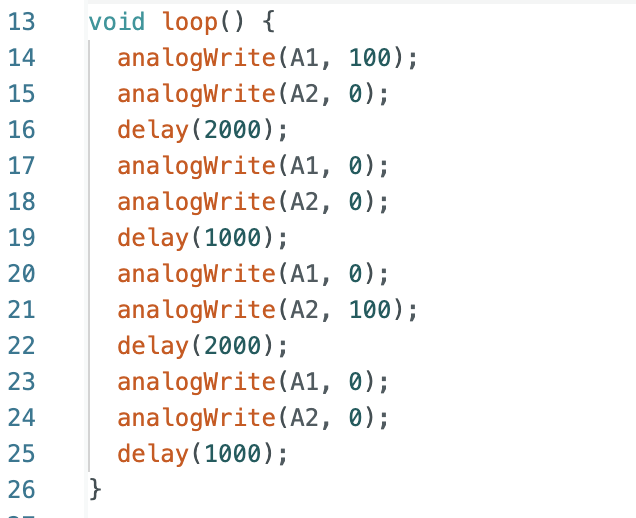
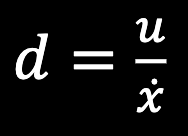
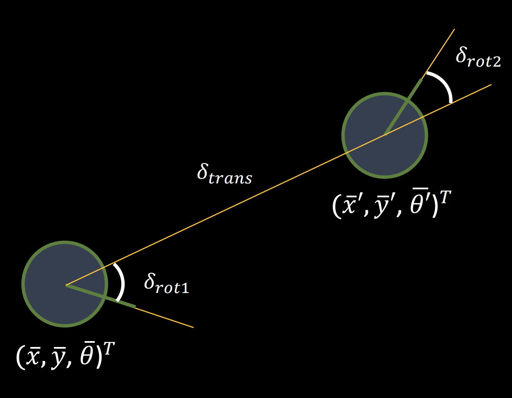
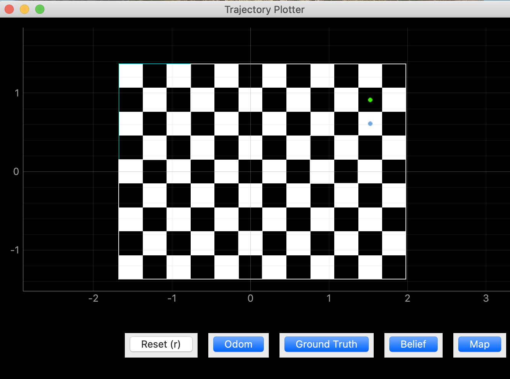
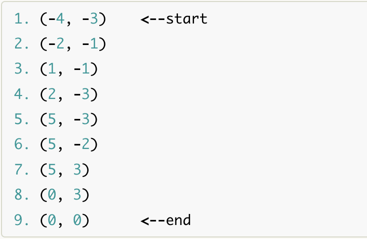

Hello! I am a MEng ECE student at Cornell University. I am interested in robotics and enjoy any hand-in experiments.
This webpage serves as documentation for ECE5160
Lab1
The purpose of first Lab is to setup the Arduino IDE and the Artemis board, and test hardware components on the board.
Before the lab, I intalled the latest version of Arduino IDE.
Step One
Connect the Artemis board to my computer, and follow the instruction provided in course website to install the Arduino Core for Apollo3
Blink
After selecting board nano and USB port, I followed the instruction example: blink it up. I chose the blink example and the result showed as below video:
Serial
I ran the serial example in Arduino, in my computer I found out that it was Example2 instead of Example4. It echos back well based on provided input.
AnalogRead
I ran the analogRead example in Arduino, and it was Example4 instead of Example2. It was used to the temperature sensor on the board. I works well and displayed the temperature results. When I touched the sensor with hand, the value changed.
PDM and Additional Work
The Example1_MicrophoneOutput under PDM of Arduino Example was used to test the microphone. When I made sound in different tones, the output would showed the corresponding frequecies.
I added the code below to the function "printLoudest" of the example so that the board would light up the blue LED when A note was played over the speaker, and turn off otherwise.
The frequency of A note was around 440hz. I tested and figured out that the board recognized the 440hz I played as 434hz. Then I switched the condition that LED would be lighted up under 434hz.
Code:
Lab2
Prelab
The first section of the prelab is to install the python, and I updated my python version to 3.10 which satisfied the requirement. Later I installed the virtual envrionment packages and
after activate the virtual envrionment, my terminal CLI prompt shows the prefix FastRobots_ble as the figure one below.
Figure 1. Virtual Envrionment
Then I installed the ArduinoBLE from the library manager in the Arduino IDE. After loading the ble_arduino.ino code into the Artemis board from the codebase, I did not change the baud rate to
115200 bps at first, and the output was messy characters. Then when I switched to the correct baud rate, the board printed my MAC address in serial monitor as Figure 2.
Figure 2. BLE MAC address
After printing out my MAC address and generate unique uuid, I updated my MAC address in connection.yaml and replaced BLEService UUID in both the sketch ble_arduino.ino and connections.yaml.
Since my computer is MACOS, I initially did not change the line 53 of base_ble.py from "if IS_ATLEAST_MAC_OS_12:" to "if True". The bluetooth did not work and connection always failed, the error message
showed that it could not find the address. Then I modified the line 53 to "if True" mentioned above, the connection worked quit stable and demo.ipynb notebook could pass the test shown as figure below.
Figure 3. demo.ipynb output
Codebase
In the ble_robot directory, it contains the ble_arduino folder and ble_python folder. The ble_arduino includes c header files and the .ino file which should be uploaded to Artemis board.
The ble_python primarily includes the demo which is the Jupter Notebook to run command, .yaml file which assigned uuids for bluetooth connections, and cmd_types.py which class involves all the commands.
For the bluetooth connection, in the computer side, the .yaml file should assign unique uuids for building the connection. And in the arduino side, the .ino file should change to the same uuids as .yaml file
so that the ble could find out and pair the bluetooth connection.
Task One -- ECHO
The first task was to send ECHO command to Artemis board with string message, and my computer received the augmented string back. In my code, I sent a "HiHello" message with ECHO command to Artemis board, and it sent back
"Robot says -> HiHello" to my computer. The code from computer was as Figure 4 below.
Figure 4. demo.ipynb code for ECHO
The following code demonstrated how Artemis board augmented the string "HiHello". Besides the work mentioned before, for each added cases (commands), I should add the command name to the file "cmd_types.py" so that computer could find the commands.
Figure 5. Arduino code for ECHO
Task Two -- GET_TIME_MILLIS
This task I added ono more case in Arduino as Figure 6 below, the function "millis()" would return the runtime in milliseconds of since the board began to run the program. Since the returned type of "millis()" was unsigned long,
I switched the output type to float.
Figure 6. Arduino code for GET_TIME_MILLIS
Following is the code which sent the command and receive the result of time printed.
Figure 7. demo.ipynb code for GET_TIME_MILLIS
Task Three -- Notification Handler
This task I called the "ble.start_notify" function to start the notification handler, and there was a "ble.stop_notify" below to stop the handler. The callback function had uuid and bytearray as the
elements and printed out the time which extracted from the string (bytearray) by function "ble.bytearray_to_float()".
Figure 8. Notification Handler
Below video printed the output of notification handler which demonstrated how it received the string value constantly
Task Four -- GET_TEMP_5s
In the Artemis board, after receiving the GET_TEMP_5s command, it returned an array of five timestamped internal die temperature readings. The result was in pairs of time and temperature.
Time was got by function "millis()" and die temperature was from function "getTempDecC()". Each second the array will be appended the pair of time and temperature.
Figure 9. Arduino code for GET_TEMP_5s
The figure below used the notification handler to receive, update, and print the array. And demonstrated the five timestamped readings sent back from Artemis board, one second each.
Figure 10. demo.ipynb for GET_TEMP_5s
Task Five -- GET_TEMP_5s_RAPID
The task was similar to task four, but it required to sends as array of five seconds worth of rapidly sampled temperature data, and it should be at least fifty temperatures. Initially, I directly appended
the temperatures and times in the while loop without clear the arrray everytime, the character size quickly reached the limitation and stopped running. I also added a counter to count how many points were sent.
And the "delay(100)" was added each loop since it was important for the program to run continuously. The arduino code was as Figure 11.
Figure 11. Arduino code for GET_TEMP_5s_RAPID
In the computer, I also used the notification handler to get the array updated. The video below could show how the time and temperature updated, and the total count of points was fifty.
Task Six -- Limitations
The Artemis board has 384KB of RAM in total, and it should be 384000 bytes after conversion. If each time the data size is 16 bits (2 bytes), and the rate is 150 HZ.
Based on the calculation, in 5 min we can send (5*60)/(1/150) * 2 = 90000 bytes. To reach the limitation 384000 bytes, 384000 / 90000 = 4.267, 4.267 group of 5 min
which in total is 1280s. Therefore, 1280 seconds of 16 bits data taken at 150 Hz can be sent without running out of memory.
5000-level Task -- Effective Data Rate And Overhead
To test the data rate, I generated a for loop which started at 5 bytes, increased 5 bytes each time, and ended at 125 bytes. The initial time would be reset each loop. For each sent message,
I ran 100 times and calculated the average millisecond it took to increase to correctness. The millisecond for each time was calculated in the notification handler.
Figure 11. Data_Rate
After getting the times, I plotted the graph below with bytes versus time(s). As shown in the plot, the larger data size required more time to complete.
Figure 12. Plot
The larger data size would result in larger data rate. Therefore, the larger packets actually help to reduce overhead, and short packets have more overhead.
5000-level Task -- Reliability
For testing this section, I added one more for loop to send 300 times data without delay and printed out the actually sending and receiving packets. It perfectly matached that
the sent count and receive count were both 300. That means, the computer did not miss any data packets from the Artemis board.
Lab3
Prelab
From the datasheet of VL53L1X, the I2C address is 0x52. The two TOF sensors have the same address. To use two sensors simultaneously, one of the TOF sensor should be shut down through
the XSHUT pin, and change the address of another open sensor programmatically, then turn on the shut down sensor. This process should be repeat every time if want to use two TOF sensors at
the same time. Another way to use 2 ToF sensors is to enable the two sensors separately.
My plan is to place of the sensor on the front of the robot, and expect to place another at the back. However, the wire probably not long enough, I will place another sensor on the right side.
The scenarios I will miss obstacles are when obstacles are one the left side and very close to robot, or when the robot moves backward.
Below is the sketch of my wiring diagram.
Figure 1. Wiring Diagram
Lab Task
One TOF Sensor Connected
Below is the picture of my ToF sensor connected to my QWIIC breakout board. The XSHUT pins of two sensors were soldered to A2 and A3 in Artemis board. The blue QWIIC cable was connected to SDA,
and yellow QWIIC cable was connected to SCL. I used the long cables to solder two TOF sensors so that it would have enough space to be placed on robot car.
Figure 2. One TOF connected
Scan the I2C Channel
It ran the example from Apollo3, the name of the example was Example1_wire_I2C.
Figure 3. I2C Address
The default address from datasheet is 0x52, but the detected address shown from I2C example was 0x29. The binary address of 0x52 is 0b01010010, and binary address of 0x29 is 0b00101001.
It seems like the LSB of the address has been shifted and results in the 0x29.
Sensor Data with Chosen Mode
In the instruction, it mentioned that there were three distance modes, actually I only found short and long mode in Arduino. My chosen mode was .setDistanceModeShort(), since the longest distance it can detect was 1.3
meters which was enough for a rotor car. And longer distance required more time to reflect back which was time consuming. In addition, short distance works better for ambient community. The figure below
demonstrated how to set the distance mode.
Figure 4. Code Mode
To test the accurancy of my chosen mode, I taped the sensor to the table, and used ruler to measure the distance, then taped at each 10 cm. The longest test distance was 1 meter. This part I cooperated with
Zhiyuan Zhang, but we tested our sensor seperatly. The picture below showed how we set up to test the distance, and we used the white box as the obstacle.
Figure 5. Test Sensot Set Up
I tested the distance accurancy for both short and long modes. Based on the readings from distance sensor, I plotted the two lines below.
Figure 6. Plot of Sensor Detection
The blue line represented the actural distance, the orange line represented the short mode, and the gray line meant the long mode. There were totally 10 points. It can be analyzed that the longer test distance had higher accurancy, and the short mode and
long mode lines were both closer to the actual one under the envrionment of lab. The worst test point was at distance zero, my sensor could not test it as every time the obstacle closed to the sensor, the output distance was always around 20mm.
2 ToF sensors
For making two sensors worked at the same time, I soldered the XSHUT pins to A2 and A3 of Artemis board.
Figure 7. Two TOF Sensors
In the arduino code, I defined two pins corresponding to the two XSHUT pins. Then I turned on the sensor one and turned off the sensor two, reset the sensor one address to 0x33 so that two sensors communicated in different addresses.
Then open the sensor two after setting. In the loop part, I added the sensor two to read the distance with sensor one together.
Below is my code in the setup section.
Figure 8. Two Sensor Setup
This is my code in the loop section.
Figure 9. Two Sensor Loop
The result of two sensors
Figure 10. Two Sensor Test Result
Tof Sensor Speed
To test the speed of TOF sensors, I used a while loop and the function ".checkForDataReady()" to check if the data of both sensors were ready. Then added two if statements to print out whichever was ready.
Figure 11. Two Sensor Speed
Below was the output of sensor speed. The time interval between detecting same sensors were around 110ms. The speed of loop excecution was 5ms. The current limitation is probably the time to start ranging
distance and print the value out. The time speed of two sensors are different.
Figure 12. Speed Output
Time vs. Distance
This task is to record time-stamped ToF data, and send to computer through bluetooth. For testing in a convenient way, I added one more header file "TOF.h" which included two functions: one was 'set_up' which initialize and changed the address of sensors,
another one was 'detect_data' which worked for distance reading for both sensors and appended into an array every time. The code in 'TOF.h' was similar to the one for sensors reading above. One more command names "TOF_TEST" was added for this task in computer side.
Since the time for two sensors to detect distance were different, I chose to included two time. I totally sent the command 20 times which received 20 packages of data. Each package contained the distance read by sensors and the time each sensor finished reading. I splitted
the data into four arrays for plotting.
Figure 13. Time vs. Distance DemoFigure 14. Time vs. Distance Arduino
The plot was sketched based on the sensors' distance and time.
Figure 15. Time vs. Distance Plot
(5000) Discussion on infrared transmission based sensors
Other than the TOF sensor we use, the Ambient light sensor and Passive Infrared (PIR) sensor are also based on infrared trasmission.
The ambient light sensor is a component of mobile devices which automatically adjusts the brightness based on surrounding light levels. High lightness under low light conditions will hurt our eyes. This sensor helps to prevent eye strain and improve the viewing experience.
It can be automatically controlled depends on the light envrionment. In addition, adjusting the light in different situations can save the energy. However, the accurancy is quite limited. Sometimes the strong light will cause the inaccurancy. And the cost for this sensor is
high.
The Passive Infrared (PIR) sensor is to detect heat energy in the surrounding environment. It is effective for motion detection in a wide range of applications. It works by detecting the infrared radiation which is emited by objects with a temperature.
It is designed to detect changes in infrared radiation. It is quite easy to install and does not require any special calibration or adjustment. It also has some limitations. The range for this sensor to detect may not cover enough areas, and it requires multiple sensors to work together.
The sensitivity of PIR sensor can be affected by environmental factors such as temperature and humidity.
The TOF sensor which we use on the Lab, work by emiting a infrared light and measuring the time it takes for the light to reflect off an object. It basically has hign accurancy and range. The long range mode can detect 4 meters furthest. However, it will be affected by
highly reflective surfaces and results in inaccurancy under these situations.
(5000) Sensitivity of sensors to colors and textures
For testing the sensitivity of colors and textures, I used the white fabric and black notebook cover as the obstablcs to test the distance reading seperatly. The default distance I set to test was 200mm.
The black notebook cover can be reflected under light.
Below is the result for white fabric.
Figure 14. Time vs. Distance Arduino
Below is the result for black notebook cover.
Figure 14. Time vs. Distance Arduino
From the result above, the distance was quite accurant for white fabric, since the color and texture did not reflect any light. And the result was very stable. However, the black notebook cover could
reflect the light in my room which affected the sensor detection. The error range was around 36mm. Therefore, the TOF sensor is sensitive to different colors and textures.
Lab4
The purpose of this Lab is to connect the IMU to the Artemis board using the QWIIC connectors for detecting the data of pitch, yaw, and roll. Finally, we will run the RC car with Artemis board attached
and record the raw data.
Set up the IMU
The picture above is the setup and conncection of IMU to Artemis board through QWIIC connectors. To test the work of IMU, the Example1_Basic code was ran and the output as below. When I rotated the IMU
in different directions, the corresponding value (roll, pitch, yaw) were changed for both accelerometer and gyroscope. The accelerometer is the linear change, and gyroscope is the angular change.
The definition of AD0_VAL is that the default value is 1, and when the ADR jumper is closed the value becomes 0. After checking the datasheet of IMU, the AD0_VAL represents the last bit of slave address.
It can be used if there are two IMU connected, one of AD0_VAL is 1 and another one is 0 so that they can have different I2C address.
Accelerometer
The euqation of calculating pitch and roll from lecture is shown as below picture.
And in arduino code, the equation was implemented as below.
The video demosntrated the output at {-90, 0, 90} degrees for pitch and roll. The blue line represented the pitch, and the orange line was the
roll.
From the test result, there was a lot of noisy contained in the wave. The error range of pitch and roll was about 2 degrees. The noisy would be larger if the sensor was put on the RC car. To reduce the noisy of the data,
I followed the provided tutorial to analyze the data used FFT. The data was sent from Artemis to computer, and below are the figures of time domain and frequency domain.
I collected 10 seconds' data and the sample frequency was set to 50. From the comparison of time domain and frequency domain, as we can see, there was no significant change after the first spike. There was some little noise contained.
After checking out the information in datasheet, the IMU includes low pass filter response which minimum is 5.7Hz, which would be possible to affect the little noise.
Gyroscope
The equations of computing gyroscope are as below.
Same as accelerometer, I also tested the pitch, roll, and yaw in [90, 0, -90] (blue = pitch, red = roll, greeb = yaw). The output reflected that the error of calculating gyroscope was very large, the maximum error could reach 45. The accelerometer
has acceptable error range, but the gyroscope's error could be larger and larger as the time goes.
To demonstrate how the sample frequency affect the accurancy of detecting angles, the delay time was adjusted. The delay time should be 10ms for 100Hz, and 100ms for 10Hz. The first figure below was 10Hz, and the second figure was set to 100 Hz. As shown
in the figures, the noise decreased while detecting, but the accurancy was still bad. While putting the IMU at table without moving, the data drifted further from 0, and experimenced quick vibrations when rotated.
For computing an stable and accurate estimate of pitch and roll, complimentary filter was applied to improve it. The complimentary filter equation from lecture was posted below. It is basically the combination of accelerometer results and gyroscope results. The alpha is the weight to determine which result should take more porpotion. To compute the most accurate and stable
data, the alpha here should be 0.1 which means the gyroscope data has more weight.
The output of complimentary filter is as below. The blue line was pitch and the red line was roll. The accurancy was a lot higher and the error was smaller than 1 which was a acceptable range. The working range was -180 to 180. And the data did not drift and experimenced quick vibration while moving quickly
Sample Data
The first task of sampling the data was to speed up the execution. For speeding it, I deleted all the serial.print to avoid any source of delay. After getting rid of all of the delays, new values could be sampled in an average of 27 ms.
The time-stamped data for IMU included the accelerometer pitch and roll, and complimentary filter of gyroscope pitch and roll, and also the time to receive all the data.
Finally I integrated the data of IMU and TOF together. All the data were stored in an array each loop, and then sent to my computer using Bluetooth through BLE. I chose to put all of them in a big array instead of seperate array since the memory was enough to hold them. Below video demonstrated 5s of ToF and IMU data sent over Bluetooth. Since there were more data to be packed and sent,
it took more time for Artemis to wait for the value ready.
Cut the Coord
In this task, the battery would be replaced the USB C cable to power the Artemis. The 3.7V 650mAh was used to connect the Artemis board, and the 3.7V 850mAh one was connected to power the RC car since it took more energy.
I soldered the cables from 650mAh battery to the JST connector, and carefully made sure that the red soldered to red, and ground connected to ground. After soldering, the battery was plugged into the Artemis board and it light up.
The bluetooth still worked well after testing.
Record a Stunt
The video below I tried to play the car without Artemis:
This is the video that RC car with Artemis:
I ran the data for 10 seconds and got approximatly 90 data points. Below are the plot data sent over Bluetooth. I tried to filp it but did not success.
Lab5
The purpose of this Lab is to change from manual to open loop control of the car. At the end of lab, the car can be controlled by Artemis board and two motor drivers through coding.
Prelab
The diagramm above demonstrates my connections between Artemis, two motor drivers, and 850 mAh battery. The inputs and outputs of both motors are hooked up in parallel. The left
motor driver was soldered to pin A14 and A15, and the right one was connected to pin 4 and A5 as the figure. The power and ground of two motors were also parallel and finally connected
to 850 mAh battry.
Battery Discussion: the artemis and motor drivers are using seperate batteries since there are to motor drivers connected in parallel to run the car by using only one battery. Therefore, the
Artemis board uses less power and current compared to motors to work.
Motor Driver Test
The picture above demonstrates my setup with power supply and oscilloscope hookup to test the PWM with left motor AOUT1 and BOUT1. The power supply I set to 3.7V since the motor would finally connected to the 850 mAh battery which is also 3.7V.
The PWM waveform showed that my motor performed well. I set both pin 14 and 15 as output mode, and tested both pin seperatly with 100 using "analogWrite" (which duty cycle is 100/255 = 39.2%). The value could be in the range of 0 to 255.
Single Wheels Spinning
After testing both motors working, I took the blue shell of the car off and cut off the build-in PCB board and connected LEDs. I soldered both of the motors to the motor drivers, and also connected the power to the battery side. It was silly actually since
I should test step by step. But luckily...it works. I used the code below to run the motor in different directions for 2 seconds everytime, and stop one second, the power was ran by battery. The spinning result is demonstrated as the video attached.

Both Wheels Spinning
After making sure each side of the car could spin seperately through the test code above, I used the code below to running the both wheels together. The code were similar to above which only added pin 4 and pin A5, and made sure that both wheels ran in the same
directions each time. The car was powered by battery.
All Components on Car
The figure below demonstrates how all components settled in car.
Lower Limit PWM Value Discussion
I tested the PWM value since 30, which my hypothesis was it should be able to run the car. But actually, my motor did not move. Then I switched it to 40, the motors started moving
when I hold it, but because of the friction between tile and car, it needed more power to move. After several tests, I figured out that the lower limit PWM value of my car to go forward
was 50. It could be different if the car was run on other types of ground.
The lower limit in PWM value for on-axis turns was higher since the wheel experience more friction to make a turn. The limit value was 80.
Calibration demonstration
Ideally, the both motors' power should be the same. But after testing, the direction of car significantly drove to the left. It means that the right motot has more power under same PWM value.
After multiple running, the calibration factor was 0.6 as the code below. The video attached demonstrates the car going straight with at least 2 meters.
open Loop Control
Following code and video shows the open loop control. I did a straightly moving forward first for 5 seconds, and then turn right, turn left, and finally did the backward for 5 seconds.
5000 Level Task
Task one: From the screenshot before, the frequecy it generated was 182 Hz. I think the frequency is fast enough for this motors since other sensors also need time to do the detections.
And if we manually configure the timers to generate a faster PWM signal, the motor would run faster and it would be benifical in running somewhere hard to run.
Task Two: Since the friction is large and different in different places, I set the PWM value to 60 initially to run the car continuously. And then since the limit PWM tested above was 50, I initially set the second
PWM to 40 which works well. After several experience, I found that the minimum PWM to run the car in motion was 35.
Lab6
The purpose of this Lab is to get a hand-in experience in implementing the PID control.
Prelab
The bluetooth setup by using BLE was same as the lab before. The first thing I did was to build the connection between computer and Artemis board, therefore I
created two more cases at BLEArduino.ino. One case was for start the PID control of robot car, and another case was used to stop the car after PID control and
send all the data including motor input, TOF distance, and corresponding time to the computer. I defined three arrays seperatly to store these data, and finally
use a for loop to package data together as the time-stamp we did in before labs and send back to computer.
Then inside the demo.ipynb, I raised a notification handler to receive the data send from the Arduino side. The "pid_data" string contanined the three values stated
above and seperate by space. Later on I will define arrays to store these datas for ploting. The Start_PID command will be ran first to start implementing the PID and
collect data, then stop_PID will be sent to stop the process and get the data just collected.
P/I/D discussion
In the lab task, I set a certain distance as the goal to implement the PID control. The error was the difference between the measured distance and set distance. The mainly
parameters of PID control are Kp, Ki, Kd. The Kp controls how quickly to turn the steering while heading to the set point. Ki adds more steering action to make it stable. And
Kd can be used to limit the speed and avoid oscillation. For choosing the parameters, I started test from only set Kp which gradually increased from 0. After the car reacted
fast and ran toward the wall, I started adding the Ki which lower the speed but increase the stability of control. I added the Kd last when the car started oscillating around
the set goal to reduce the oscillation. The Kp = 0.1, Ki = 0.01, Kp = 51. Too much integral can be lead to shaking, so the Ki much smaller than Kp.
Range/Sampling time discussion
The time interval of TOF sensor detection was around 110 ms. It was quit enough for the PID control to response and updated the new value from tested distance data. However, the
TOF sensor was not very accurate. There were some deviations. I set the goal as 400mm, and when I tested the distance detected by sensor, it can be ranged from around 396 ~ 404mm,
and it kept floating. Therefore, I set to allow that deviation of 5, which means from 395 to 405 were both considered as 400 mm. In addition, to avoid the car running too fast, the
upper bond of PID calculated value ut was limited to 140, and the lower bond was 55 so that it could move at lowest speed.
Task A
After calculating the integral, error, and deriviation, the equation of pid was as below:
The car moving was based on the calculated ut, which was also the pwm of motors.
The distance detected by tof, the pwm value(ut), and corresponding time are all stored in arrays. If the size of array was full, it would stop storing to avoid any errors.
The video below showed that the robot car successfully implemented the PID control which stopped at 400 mm away from the sponge wall.
Below is the graph of motor input versus time. After the car adjusting the position, the pwm tended to be stable at around 20 since the distance error was inside the deviation which should stop the car.
Following figure is the TOF distance versus time. The distance started from a large value since the car was away from the wall, and tended to be stable at about 400 mm.
Wind-up implementation and discussion
To avoid the integrator windup, a limition was set to the calculated integral to avoid it became too large or too slow. The integrator windup would result in an overshoot in PID controller if the large error remained long and the
sum of integral became too large to exceed the limitation of pwm. If the floor surface has small friction which is hard for car to run, the large error would keep very long and the pwm would have the risk to over the rang within
0 - 255. In my code, I have setup the limitation for pwm which also avoid these issue.
Lab7
The purpose of this Lab is to implement the Kalman Filter. It will help to improve the executation of Lab6 and make it faster. The Kalman Filter can supplyment the slowly sampled Tof data, it allows the
car run towards to the wall as fast as possible.
Estimate drag and momentum
For implementing the Kalman Filter, the first step was to estimate the drag(d) and momentum(m). The equation we calculate as follow:

To get the value, I drove the car towards a wall while logging motor input values and ToF sensor output. The PWM value I chose was 120 from previous lab. Then I used the time and detected distance
to find out the steady state velocity and 90% rising time which are required to calculte the drag and momentum. Graphs below demonstrated the car ran towards the wall. To avoid crush, I used a active
break to stop the car 100mm before wall to avoid hard crush.
From the detected data, I figured out the the steady state velocity shoule be 2000mm/s, and at here the u was 1. Therefore, d was 1/2000 which was 0.0005. The total rising time was about 2.9s, so the 90%
rising time would be 2.6s from my graph. Then I got my momentum which m = 0.000564. Later on I used the drag and momentum value to output the matrices A and B, based on the formula below,
From the founded A and B above, I could apply the following equation to discretize my matrices. The delta t was the difference between two continuously recorded time. The C matrix directly
equals to [-1, 0].
The Kalman Filter also required the measurement noise and process noise covariance matrices.
As for the three ballpark values in the matrices, I directly tried the value from lecture first. After adjusting, my value were as below:
After computing all the needed value and matrices, the last step was to combine them together for the Kalman Filter. Following was my code in python
to test the filter in Jupyter. To run the KF, the input values u and y were the pwm motor value and sensor detected distance. I created another array to store
the predicted distance value after filter.
Below was the graph of detected tof sensor data and Kalman Filter value. It was demonstrated that the predicted value was quite match with the detected data.
Implement the Kalman Filter on the Robot
After multiple testing and determining that the Kalman Filter works as expected in Jupyter, I integrated the Kalman Filter into Lab 6 PID controllor on the Artemis.
Following was my code in arduino which moved the KF from python to C. It was a little bit complicated compared to implement the filter in Jupter Lab. The PID value
was same as Lab6, and instead of directly use the detected distance to compute the error, I used the Kalman Filter. However, I found that the car was sighly oscillated
after reaching the set distance goal (400mm), I chose to change to trust and use the sensor value if the error was lower than 30.
Below was the graph of Kalman Filter and tof data, and the video of car running. The car backward was affected by the friction between floor and wheels.
Lab8
The purpose of this Lab is to combine what I did in previous labs and complete a fast stunt. In this task, I will chose the first task which is the position control. The target is to
flip the car at provided sticky matt with a center located 0.5m from the wall, and then drive back in the direction from which it came.
Position Control
Since to flip the car successfully, the car should be set as fast as possible running toward the wall without slowing down. The PID control I did in Lab6 should be disengaged here.
Initially, I tried to use the Kalman Filter from lab 7 with the same calculated parameters as the prediction distance value to detect when to do the flip. However, the Kalman filter
was not working here, the output of Kalman filter was vibrating from positive to negative, which made the car moved very slow with shaking forward and backward. I tried to recalculate
the parameter of drag and momentum, but the issue was still not solved. The Kalman filter worked well in last lab, and the estimation line was quite close to the detected distance, but
it worked wired here. Therefore, instead of using Kalman filter, I switched to use the distance detected by sensor directly.
For doing the flip, I set the car to run at 255 PWM and changed to backward at 255 when the car approaching to the wall, delayed for around 0.5 second to complete the flip and thenn drive
back to start line at 150 pwm. I first set the car to do a flip when the sensor detected 0.5m from the wall. Then I figured out that the speed of car was too fast, when the sensor detected
0.5m and backward, the inertia would make the car hit the wall which failed in fliping. Then I did the calibration which have the car backward(flip) at 1.1 meters. It worked quite well to
do the flip. But the car did not go straight when the speed was high, even it could move straightly in previous labs with low speed. I calibrated the speed one more time to make sure it wouldn't
drive to the outside of matt. The following was the code in Arduino for flipping:
The three videos demonstrate that my stunt works are at below:
The pwm for my car is continuously 255 at beginning, and change to -255 later, then become -150 until passed the line. The distance value would be change from 3 meters, and stop at around 0.5 meters
since I stopped recording the data when it started to flip.
Lab9
In this lab, we aim to map out a static room, and this map will be used in later localization and navigation labs. For building the map,
we should place our robot car in a couple of marked up locations around the lab, and have it spin around its axis while collecting ToF readings. All the
recorded data in different locations will be combined together, and use the transformation matrices to plot points and draw up the map using straight line segments.
Angular speed control
In this lab, I chose to use the angular speed control with a average speed 20 degreed per second. The PID control will manage the pwm(speed of motor) to be slower or
faster to maintain the rotation speed at 25 degrees / second. The basic setup for IMU was based on what we did in Lab 4 before. The first step was to spin the car slowly
on axis. It took a long time for me since I figured out that the friction of different tiles and batteries affecting a lot. The same pwm value will result in different output
in most of the time. I finally chose to set the initial speed as 120, and the KP as 0.05. The following code demonstrates the PID control:
The following video and figures demonstrate the robot car spinning on axis:
From the video, it shows that my car drove slowly on-axis but somewhat frustrated. I hope it could run stable, however, after I had tried multiple times with different speed and charged all the
batteries, it was one of the best status. The angular speed I set was 25 degrees per second. The measured speed was quite frustrated, but the average was around 25 degree. My motor speed change slightly
which it ranged from 116 - 120, it can be included that the cat motor worked stable, so the frustration of car was probably because of the friction varied between tile and wheels. The total time to spin 360
degree was around 14 seconds, which means the average angular speed was close to 25 degrees per second.
Read out Distances
There are totally five marked positions in the lab that we can do the map. For each position, I spinned the car in 360 degrees and have the tof sensor to record the data. To make sure the data was reliable, I ran
at least twice at each location to find out the most fit one. It was not accurate at first since the detections by sensors were not correct, it would occur some strikes. After multiple trying and reconnected the sensor,
it worked better to record the map data. Below are the five polar coordinate plots:
Merge and Plot your readings
After I got all the data points from each coordinate, I computed the transformation matrices and convert the distance value detected by tof sensor to the inertial reference frame of the room. The equation to convert each
data value to x and y value as below. All distance data from five positions would be converted as coordinates to be plotted.
Since each spin was done in different positions of the map, I should calibrate the points to add up the coordinate values to data with the conversion conversion 1 foot = 304.8 mm. After converting all points into array, I plotted
them as below where different colors represented the which coordinate it performed the spin.
Convert to Line-Based Map
After drawing all the scatter points on the map, I manually estimated where the actual walls were and plot the lines. I also showed the lists containing the end points of these lines.
Lab10
In this lab, we are going to implement grid localization using Bayes filter in a simulation environment in python. Below is a visualization of bayes filter which has three layers represented x, y, and
theta.
The algorithm below for implementing the bayes filter will be used in most of the works at this lab:
Compute Control
This function takes the current and pase odometry poses as the input to calculate the information for the first rotation, translation, and second rotation which are required for getting the robot
from previous pose to the current pose. Moreover, the figure below descrips the computation:

I simply used the trignometry and Pythagorean Theorem to do the calculation.
Odom Motion Model
The odom_motion_model function takes the current pose, previous pose, and the control input (u) as inputs. It computes and returns the probability of the robot moves to the current pose. In the
implementation, I first got the initial rotation, translation, and second rotation from compute_control function stated above. Then apply the gaussian distribution to model the measurement noise. It
helps to compare between the pass control unit and actual control unit, and evaluate the probability of the robot transit from previous pose to the current pose.
Prediction Step
The next step is to implement the prediction_step function which is this part of bayes filter:
This function takes the current odometry data and previous odometry data as input to update the bel_bar matrix with the marginal probability distribution. The calculation only considers the odometry values
without any sensor measurements. It is complicated which contains 6 nested for loop since there are three dimensions for previous and current. To optimize it and speed up the calculation, there is one if statement
added after three nested loop to check if it is worth to continue computing. If the values are lower than 0.0001, then it is not valuable to keep calculating.
Sensor Model
At this step, we are going to have the sensor measurements included in our function. The output is an array stores the value of p(z|x) for each 18 sensor readings. We still use the gaussian distribution here to
model noise to see the correlation between sensor measured datas and the actual values at current pose.
Update Step
Finally we implemented the update_step function which is correlated to the portion of bayes filter:
The final probabilities stored in the bel are primarily based on the bel_bar from prediction step and the result of sensor model. At the last for loop, I used the get_view
function to get the actual sensor measurements for sensor model first, then simply update the bel matrix. I also normalized the probabilities at very last.
Run Bayes Filter
After completing all the code, I ran the Bayes filter. Following I recorded the videos of demonstration of trajectory plotter with and without the grid.
The green line represents the ground truth, the blue line is the belief, and the red line stands for odom. It can be demonstrated that the blue line(belief)
is quite close to the green one (ground truth), and the odom is very frustrated. For the second video with whith boxes, the whiter means the greater probability to move.
Lab11
In the last lab, we have done the localization in the simulation at python. The main purpose of this lab is to appreciate the difference between simulation and real-world systems. We will use Bayes filter to perform localization
on actual robot. We will use the Tof sensor to detect distance per 20 degree, collect 18 data points in total to help update step.
Test Localization in Simulation
To make sure the simulator works well, after running the given lab11 code lab11_sim.ipynb, I got the following given plot:
The green one represented the ground truth, the blue line was the belief, and the red one was the odom. As shown in the figure, the Bayes filter worked well.
Perform Observation Loop 1
After testing the given code, the next step was to complete the perform_observation_loop function in lab11_real.ipynb. I added one more notification handler to receive the distance data and degrees from
Artemis, and then send the command to the robot to rotate 360 degrees and collect 18 data points by Tof sensor. To implement this function, a time await should be added to function so that the robot could
have enough time to finish the rotation. I first tried to add the "await" and "async" keywords to needed function definitions as stated in instruction, but it occured an issue which was difficult for me to
resolve. Then I switched to an alternative way which directly called the asyncio sleep coroutine as asyncio.run(asyncio.sleep(25)) inside the perform_observation_loop() function, and it worked pretty well after
trying multiple runs.
Perform Observation Loop 2
As mentioned before, it required the robot to rotate a circle and collect 18 distance data points. The part of code was similar to Lab9, but I set the limitation to only gather 18 data points. I expected to have
the Tof sensor to record the distance data per 20 degrees. Howeever, I figured out that there was a small delay every time detected the 20 degrees, which resulted in rotating the robot car over 360 degrees. Therefore,
I reduced to detect distance at each 18 degrees to allow any over-rotated. After testing, it worked well everytime.
Rotation Test
After completing above code, the next step was to test the rotation. Following video demonstrated how my robot car rotate and collect data. It would stop every time to collect data.
Result
Finally, after testing, I ran the observation loop at the four points of map. The first one was at point (-3,-2). The result was attached below. I added the ground truth to compare with the belif and added the grid to make it more
visualized. The localization of point (-3, -2) was perfectly match with ground truth.
Then the image below was at point (5, -3). This point also worked well as shown in grid, and perfectly covered the ground truth.
Following was for (0, 3). I ran three times at this point since the first run was very drift. But the last two runs both correctly matched with ground truth.
The last point here was (5, 3). It was a little off the ground truth. (green point is ground truth, blue one is the belief)

Discussion
From the results above, the points (-3, -2), (5, -3), (0, 3) were localized well compared to ground truth. But the (5, 3) was a little off, and the result was the best after running multiple times. I think the reason was due to the symmetry of environment and make the robot
get confused. And my Tof sensor's detection also not that correct.
Lab9
In this lab, we aim to map out a static room, and this map will be used in later localization and navigation labs. For building the map,
we should place our robot car in a couple of marked up locations around the lab, and have it spin around its axis while collecting ToF readings. All the
recorded data in different locations will be combined together, and use the transformation matrices to plot points and draw up the map using straight line segments.
Angular speed control
In this lab, I chose to use the angular speed control with a average speed 20 degreed per second. The PID control will manage the pwm(speed of motor) to be slower or
faster to maintain the rotation speed at 25 degrees / second. The basic setup for IMU was based on what we did in Lab 4 before. The first step was to spin the car slowly
on axis. It took a long time for me since I figured out that the friction of different tiles and batteries affecting a lot. The same pwm value will result in different output
in most of the time. I finally chose to set the initial speed as 120, and the KP as 0.05. The following code demonstrates the PID control:
The following video and figures demonstrate the robot car spinning on axis:
From the video, it shows that my car drove slowly on-axis but somewhat frustrated. I hope it could run stable, however, after I had tried multiple times with different speed and charged all the
batteries, it was one of the best status. The angular speed I set was 25 degrees per second. The measured speed was quite frustrated, but the average was around 25 degree. My motor speed change slightly
which it ranged from 116 - 120, it can be included that the cat motor worked stable, so the frustration of car was probably because of the friction varied between tile and wheels. The total time to spin 360
degree was around 14 seconds, which means the average angular speed was close to 25 degrees per second.
Read out Distances
There are totally five marked positions in the lab that we can do the map. For each position, I spinned the car in 360 degrees and have the tof sensor to record the data. To make sure the data was reliable, I ran
at least twice at each location to find out the most fit one. It was not accurate at first since the detections by sensors were not correct, it would occur some strikes. After multiple trying and reconnected the sensor,
it worked better to record the map data. Below are the five polar coordinate plots:
Merge and Plot your readings
After I got all the data points from each coordinate, I computed the transformation matrices and convert the distance value detected by tof sensor to the inertial reference frame of the room. The equation to convert each
data value to x and y value as below. All distance data from five positions would be converted as coordinates to be plotted.
Since each spin was done in different positions of the map, I should calibrate the points to add up the coordinate values to data with the conversion conversion 1 foot = 304.8 mm. After converting all points into array, I plotted
them as below where different colors represented the which coordinate it performed the spin.
Convert to Line-Based Map
After drawing all the scatter points on the map, I manually estimated where the actual walls were and plot the lines. I also showed the lists containing the end points of these lines.
Lab12
This is the final lab which the goal is to have the robot navigate through a set of waypoints in that environment as quickly and accurately as possible. Below is the waypoints for the car to
move in the map:

Method
Initially, I expected to the the robot car to do localization at each point to determine its position, and calculated the distance and angle for the next waypoint, then direct the car to move.
I have tried that at first, but the acutal test was terrible. And since I was running out of time due to other finals, I switched to use PID control for distance running and open loop control
for the angle it turned. I also applied the Pythagorean theorem equation here for my code to calculated the distance between two waypoints, and got the destinated distance for PID control. The
following figure drew out the track of the car moving.
Code
For implement it, I simply added one more case to my Arduino, and it would rise the flag of "run_path" to be true so that the loop section below could run the path. I manually wrote the waypoints
and have the function to do calculation. Since the unit of provided points was feet, I multiplied the distance number with 304.8 which turned the unit to millimeter. Since the TOF sensor was somewhat
not very accurate, I plused or minused some numbers to calibrate based on my real run on map.
Following are the functions to control the distance moving and degrees turning. The distance control used the PID control, while the degree directly used the open loop.
These are the helper function for calculating the distance and degrees. The distance used Pythagorean theore, and the degrees used the tangent from trigonometric functions
Result
The video of final run of my car was as below, which was the best one out of other runs. Since I did not apply the localization method, the car did not know its position, there were some
small mistakes throughout the running, both in distance and direction. The car hit the most points, but at the last one, it turned a little bit too much which moved slightly toward wrong
directions.